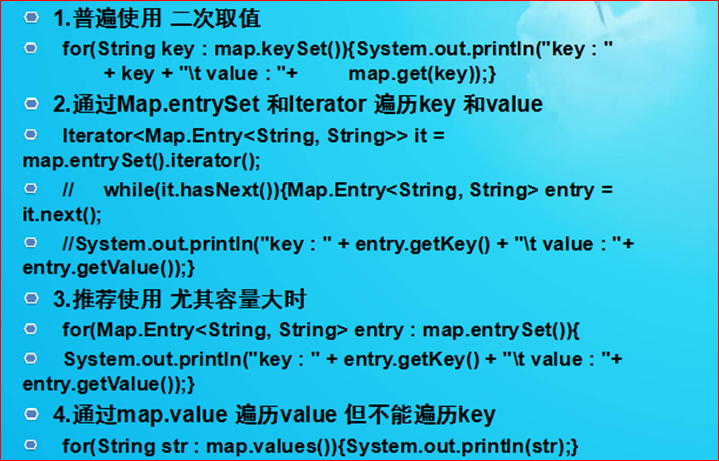

集合总纲
集合和数组
定义： 集合 也成为容器 能存能取 它可以将系列元素组合
区别：数组中的元素可以是任何数据类型，包括基本类型和引用类型。集合中的元素只能是引用类型，基本类型数据需要转换为对应包装类的对象才能放入集合。
List集合
集合 都是线性表 一个居于 数组存储 一个基于链式存储
有序 不唯一（可重复）
使用集合的优点:长度可变,并且保存的数据类型不限定
ArrayList: 底层就是数组 按照下标存储; 查询效率高 增删改慢 构造方法中 创建的是没有长度的 传参会默认10长度 然后以1.5倍增长 当让也可以创建20的长度 调用有参构造方法
LinkedList: 底层是链式; 查询效率低 增删改快
Set
存储一组 无序 唯一(不重复)
HashSet
TreeSet 存放数据 只能存放一种具有比较大小能力的类型 如果不具有比较大小能力的数据 需要实现比较器接口(Comparable Comparator) compareTo方法 返回int值
迭代器 Iterator
Iterator 与 foreach 的区别
Foreach 必须明确容器中的类型 Iterator 不必知道容器类型
Iterator 可以对容器元素进行操作 Foreach 不能操作元素
对于少量数据 使用for-each 效率高
容器数据较多 使用Iterator 效率高
Map容器
存储一组成对的键－值对象，提供key（键）到value（值）的映射，通过key来索引
key不允许重复 value允许重复 添加的对象将转换为Object类型
Map取值的四种方式

Vector和ArrayList //HashMap和Hashtable
Vector和ArrayList实现原理相同，功能相同，都是长度可变的数组结构，很多情况下可以互用。
两者的主要区别如下： Vector是早期集合类，ArrayList是替代Vector的；Vector线程安全；ArrayList重速度轻安全，线程非安全，性能较高。
HashMap和Hashtable实现原理相同，功能相同，底层都是哈希表结构，查询速度快，在很多情况下可以互用。
两者的主要区别如下：Hashtable是早期JDK提供，HashMap是新版JDK提供；Hashtable线程安全，性能较低，HashMap线程非安全，性能较高
集合的源码
// listArray;
//ArrayList l= new ArrayList();
List aaaa = new ArrayList();
LinkedList l = new LinkedList();
// 添加
l.add("aaa");
l.add(1123);
System.out.println(l.size()); // 长度
System.out.println(l.get(0)); //下标取值
System.out.println(l.get(1));
l.set(1,"尹栋力"); // 替换
l.add(1,"尹栋力"); // 插入
l.remove(1); //下标删除 下标优先级高
l.remove("尹栋力"); // 移除 对象
//l.clear();// 清空
//l.isEmpty(); // 判断是否为空
l.contains("aaa"); // 是否包含
l.indexOf("aaa"); // 检索 取小标 否则 -1
Object [] arr = l.toArray();// 转成数组
// linkedlist 增删改效率高 查询效率慢
l.getFirst();
l.getLast();
l.addFirst("aaa");
l.addLast("enen");
// set 接口
Set set = new HashSet();
set.add("aaa");
set.add("aaa");
set.add("bbb");
set.add("ddd");
set.add("cccc");
set.add(null); // 可以放空值
//只能用 foreach的类型去取 无需唯一不重复 无序的 不可重复 上面两个aaa 只能打印出一个
for (Object o: set) {
System.out.println("这是什么"+o);
}
set.clear();
set.isEmpty();
set.contains("aaa'");
set.remove("aaa");
set.size(); // 长度 一样的 只有一个位置
TreeSet Tset = new TreeSet();
Tset.add("aaa"); //类型 需要和第一个一样
Tset.add("bbb") ; //必须有 比较大小的能力 否则 没法村
Tset.add("ddd") ;
Tset.add("ccc") ;
Tset.add("aaa"); // 不重复 唯一
for(Object o :Tset){
System.out.println("Tset"+o);
}
// Iterator 迭代器 如何使用 hasNext()
// List list1 = new ArrayList();
// list1.add("aaa");
// Iterator it = list1.iterator(); // 吧list交给了 interator
//
// while(it.hasNext()){ // 判断右边是否有值 有true
// it.Next(); // 取值 移动游标
// }
Map m = new HashMap();
m.put("u3","张三");
m.put("u4", "李四");
// 什么类型都可以放 包括自定义类型 值可以相同 键唯一
System.out.println(m.get("u3"));
m.containsKey("u2");
m.containsValue("u1");
m.entrySet(); // 吧map 集合 转换为set容器 键值对 =
// Set s = m.entrySet();
// for(Object obj : s){
// System.out.println(obj);
// }
// Set s = m.keySet();
// for(Object obj : s){
// System.out.println(obj);
// }
// map的取值方式
// 第一种 通过set 转成set方式
for(Object key : m.keySet()){ //取出key
System.out.println(m.get(key));
}
// 第二种 比较恶心
// Iterator it1 = (Iterator) m.entrySet().iterator();
// while(it1.hasNext()){
//
// }
// 第三种
// 泛型 定义类型 不让你填别的 用来规定类型的
Map< String,String > m1 = new HashMap< String,String >(); // 此处必须用
m1.put("u3","张三");
m1.put("u4", "李四");
for(Entry< String,String > entry : m1.entrySet() ){
System.out.println(entry.getKey()+":::"+entry.getValue());
}
//第四种 只能遍历value
for(Object s : m1.values()){
System.out.println(s);
}